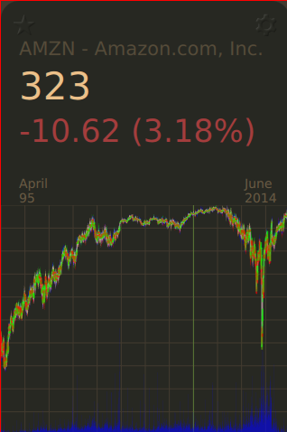
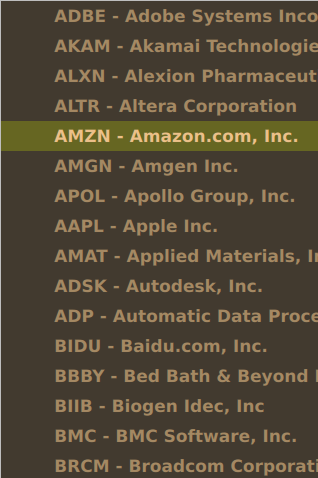
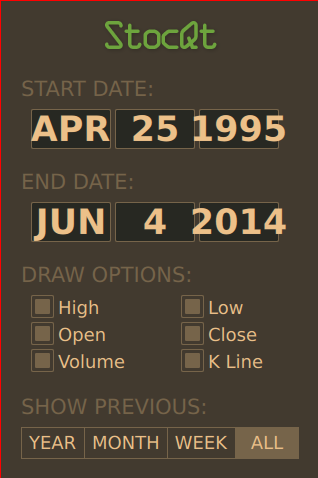
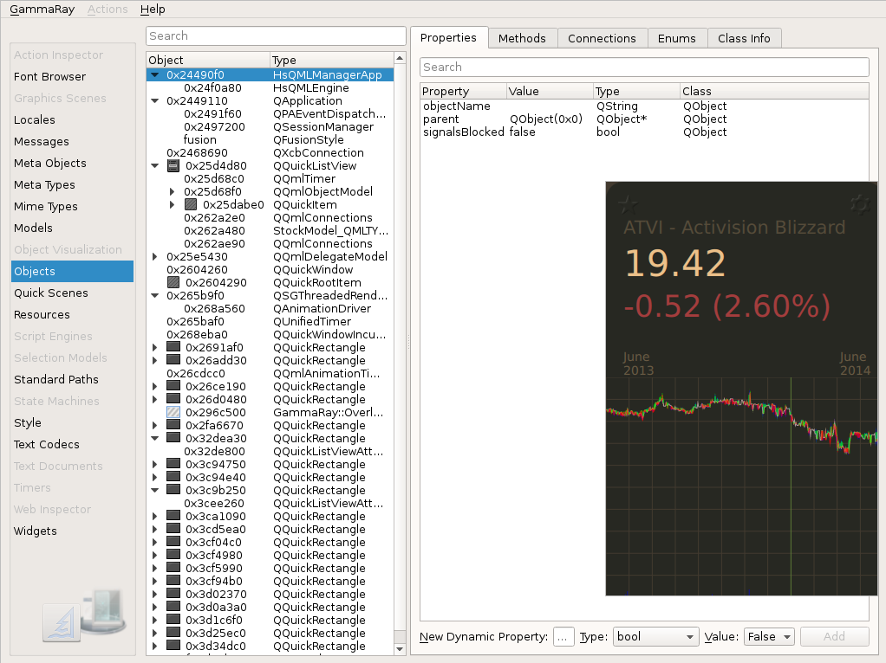

HsQML StocQt - Stock Market Visualization in Haskell and Qt Quick
Recently, I have been working on porting some Qt Quick demo applications to Haskell and HsQML. The idea is to develop more non-trivial examples to showcase the power of HsQML. The outcome has been quite impressive and HsQML has been a pleasure to work with, as usual.
Here are some images of the ported StocQt app:
  
The problem is that only general trends are legible and it’s difficult to see the exact figures. This works very similar to googles own high level finance viewer: https://www.google.com/finance?cid=22144.
I am still working on updating this example new styles which should increase readably: http://qt-project.org/doc/qt-5/qtquick-demos-stocqt-example.html
Of course, Haskell doesn’t have much to do with the look and feel. Styling is mostly handled on the QML side. The Haskell code is managing all QML properties and also providing functions for manipulating the data. The code is currently a bit littered with MVar’s but I am working on some patterns which might help mitigate the need for them to be so ubiquitous.
The working code can be found at: https://github.com/creichert/hsqmlstocqt
Inspecting HsQML StocQt via GammaRay
Out of curiousity, I decided to use GammaRay on the app. Gammaray is a tool for inspecting a Qt application and also allows you to manipulat the program to some extent. I was not surprised to see it work right away. Note the HsQMLManagerApp and HsQMLEngine types which are core to the functionality of HsQML.

I am still unsure how much GammaRay can tell us about the Haskell data. However, it does give us a great tool to check the functionality at the Qt Quick level. I will be reporting back on using GammaRay to manipulate our data and identify issues in Qt Quick.